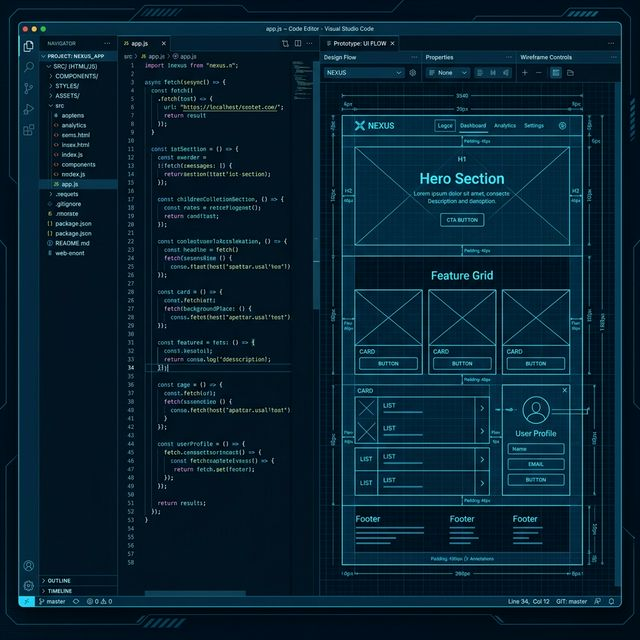

Creamos el núcleo digital de tu negocio con tecnología de punta.

Nuestro proceso comienza con una auditoría técnica y diseño UX/UI en Figma. Luego, desarrollamos tu plataforma usando React o Vite para máxima velocidad, asegurando que cada línea de código esté optimizada para SEO y rendimiento.
Tu página web es tu oficina abierta las 24 horas del día. En un mundo digital, un sitio profesional es la diferencia entre ser una opción más o ser la autoridad del mercado.
Ideal para negocios que buscan escalar sus ventas, emprendedores que quieren automatizar procesos y empresas que necesitan una identidad digital sólida y confiable.